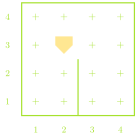
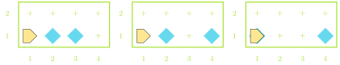
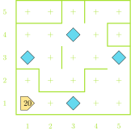

Clever Karel
Jed Rembold
September 1, 2023
Announcements
- Have Practice Problem Set 0 done by the end of Monday!
- The first real problem set will be posted Monday night
- Small sections starting up next week
- I still need about 6 of you to fill out the availability form here
- Polling starts today: rembold-class.ddns.net
- Include enough of your name that I can uniquely identify you!
- Multiple choice options will appear once the poll is officially started
- Don’t forget to join the course Discord server: invite link on Canvas announcement
- Did you fill out the survey sent from Kelly Strawn to your email? If not, please consider doing so!
Review Question
Suppose you had Karel starting in the world shown to the right. If Karel then executed the commands shown to the far right, what intersection would they end up at?

move()
turn_left()
turn_left()
move()
move()
turn_left()
turn_left()
turn_left()
move()- 2nd avenue and 1st street
- 4th avenue and 2nd street
- 3rd avenue and 4th street
- Karel would hit a wall and error
Making Choices
- To solve more interesting tasks, we need to be able to write programs that can make choices about what they should be doing
- Commands that alter the order that a program will run its commands
are called control statements, which come in two flavors:
- Conditional statements: Only run portions of the program if a condition is true
- Iterative statements: Repeat portions of the program if certain conditions are met
- Conditions are answers to yes or no (or true/false) type questions
- Am I facing a wall?
- Do I have any beepers in my bag?
- You can ask these questions of Karel using what are called predicate functions, which are the programming equivalent of yes-or-no questions
Interrogating Karel
Potential questions you can ask Karel include:
front_is_clear() |
front_is_blocked() |
left_is_clear() |
left_is_blocked() |
right_is_clear() |
right_is_blocked() |
beepers_present() |
no_beepers_present() |
beepers_in_bag() |
no_beepers_in_bag() |
facing_north() |
not_facing_north() |
facing_south() |
not_facing_south() |
facing_east() |
not_facing_east() |
facing_west() |
not_facing_west() |
Kinda Iffy
Predicate functions can be used to control a kind of “switch”: running one piece of code if the answer is yes and a different piece of code if the answer is no.
Commonly called if or if-else statements, they take on the syntax of:
if conditional_test: # Code to run if test answer is yes else: # Code to run if test answer is noIf you don’t want the code to do anything special if the answer is no, you can ignore the “else” part of the statement:
if conditional_test: # Code to run if test is true # Carrying on with code that will always run
Karel’s Decisions Example
- Suppose we want to write a single program to tell Karel to move
across the bottom of any of the below worlds and fill in any gaps in the
beepers
- We want an even layer of beepers, no stacks
- What questions should we have Karel ask?

It’s been a while
Another common use of predicate functions is in controlling a type of iterative function called a while loop
The structure of a while loop looks like:
while some_conditional_test: # Code to repeat as long as the answer # to the conditional_test is yes (true) # Code to run once the answer is noAll of our predicate functions give yes-or-no answers though! So we can do something like
while front_is_clear(): move()which will continually move Karel forward as long as there is not a wall in front of them!
Smarty Karel
- Combining conditional statements with loops lets us write a program for Karel in which it can react to different situations in different ways, all using the same code
- Our pothole code from earlier could only handle two potholes, and they had to be perfectly spaced
- With one loop and one if statement, we can make the program fill any number of potholes with any manner of spacing!
- Key questions:
- How do we know when we are done?
- How do we know when we reach a pothole?
Smart Potholes
def main():
"""
Main function to fill any number of
potholes at any location!
"""
while front_is_clear():
if right_is_clear():
fill_pothole()
move()
def fill_pothole():
"""
Fills a single pothole and returns
to where it started.
"""
turn_right()
move()
put_beeper() #assuming infinite beepers available
turn_around()
move()
turn_right()
def turn_right():
""" Turns Karel 90 deg to the right. """
turn_left()
turn_left()
turn_left()
def turn_around():
""" Turns Karel 180 deg around. """
turn_left()
turn_left()Inception: Loops in Loops
Whenever a loop ends, you just return to the same indentation level as when that loop began
For loops inside other loops then, this means that the “inner-most” loop runs from start to finish for every step of the outer loop
What does the below chunk of code accomplish?
while front_is_clear(): move() while not_facing_north(): turn_left() turn_left() put_beeper()
Understanding Check
Karel starts as shown to the right with 20 beepers in its bag. After executing the commands below, how many beepers are left in the bag upon the conclusion of the program?
while left_is_clear():
while front_is_clear():
move()
if no_beepers_present():
put_beeper()
turn_left()
- 12
- 13
- 15
- 19
Counting Loops
Sometimes we know the number of times we want to loop
- It is not dependent on some condition like a while loop
In these circumstances, the iterative statement called a for loop is best used
Syntax looks like:
for i in range(desired_count): # statements to be repeateddesired_countis an integer indicating the number of times you want the loop to repeat- The
iis a name that we will later make more general, but for now you can always leave it as ani
An Example for you
- Suppose we want Karel to create a 6x6 square outline of beepers in a room
- Need to repeat making each side 4 times
- Need to repeat placing a beeper and moving 6 times for each side
- Placing 6 beepers requires moving only 5 times. So not everything can be in the loop

A Potential Solution
import karel
def main():
"""Draw a 4x4 square in the world."""
position()
draw_box()
def position():
"""Move to starting corner of box."""
move()
move()
turn_left()
move()
move()
turn_right()
def turn_right():
"""Turns Karel 90 deg to the right."""
turn_left()
turn_left()
turn_left()
def draw_box():
"""Draws a box with 4 equal sides in a CCW direction."""
for i in range(4):
draw_6_line()
turn_left()
def draw_6_line():
"""Draws a straight line of 6 beepers, if space."""
for i in range(5):
if no_beepers_present():
put_beeper()
if front_is_clear():
move()
if no_beepers_present(): # Last beeper to make 6
put_beeper()Summary So Far
- Karel can only:
move()turn_left()pick_beeper()put_beeper()
- Can get info about surroundings using predicate functions
- Eg.
front_is_clear()
- Eg.
Group code into bundles
def function_name(): # Code to be grouped
- Conditional statements
Run certain code blocks only if a condition is true
if condition_test: # Code if answer yes else: # Code if answer no
- Iterative statements
whileloop: repeat code block as long as condition is truewhile condition_test: # Code to repeatforloop: repeat set number of timesfor i in range(desired_count): # Code to repeat